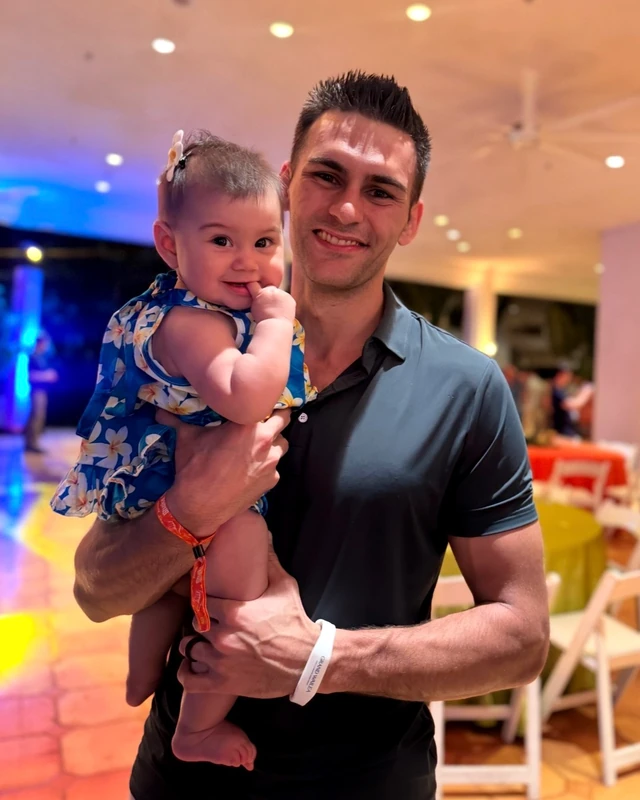
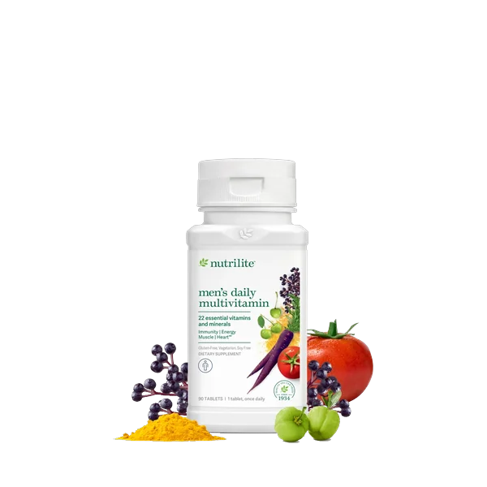
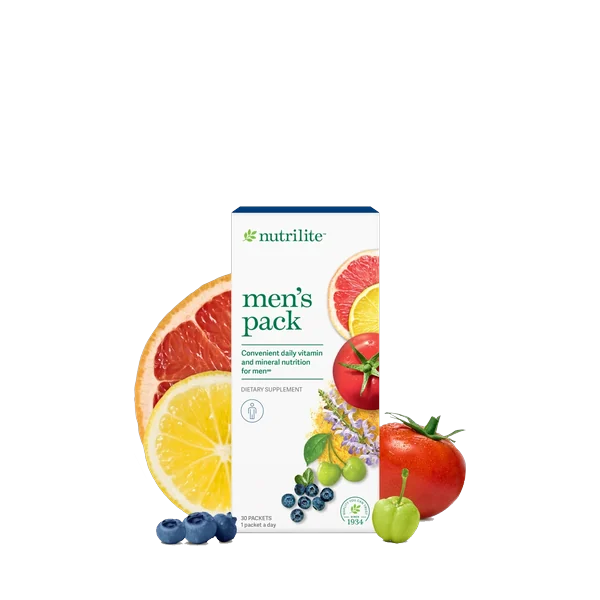
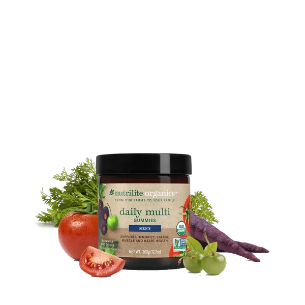
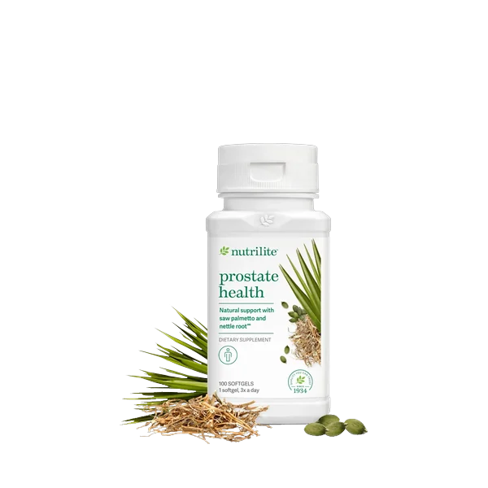
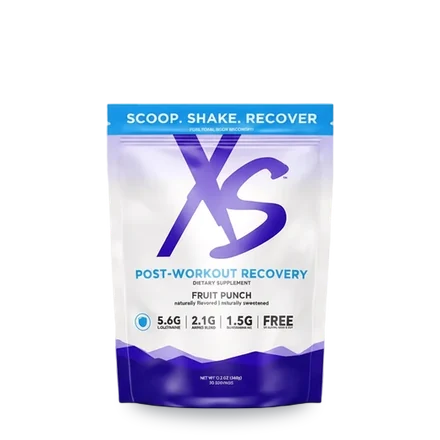
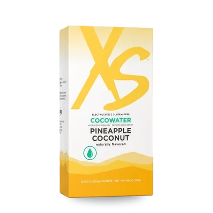
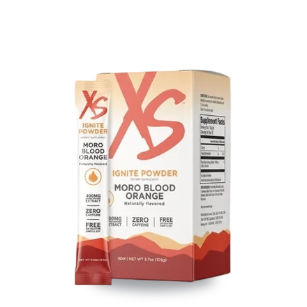
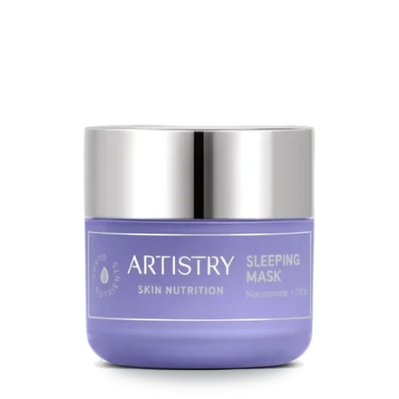

Peter’s DEXA scans
Two scans, fifteen months apart
- Body fat
- 22.1% → 7.4%
- −14.7 points
- Weight
- 170 → 164 lb
- −6 lb
- Fat
- 38.1 → 12.3 lb
- −25.8 lb
- Lean mass
- 132.7 → 152.1 lb
- +19.4 lb
Measured by DEXA scan.
Individual results vary.

For his everyday: the Men’s Pack, multis and Prostate Health.
5 products
Two scans, fifteen months apart
Measured by DEXA scan.
Individual results vary.

Men’s Health
Multivitamin tablets
Buy on Amway (opens in a new tab)
Men’s Health
Daily supplement packets
Buy on Amway (opens in a new tab)Men’s Health
Organic herbal capsules
Buy on Amway (opens in a new tab)
Men’s Health
Organic multivitamin gummies
Buy on Amway (opens in a new tab)
Men’s Health
Saw palmetto softgels
Buy on Amway (opens in a new tab)


